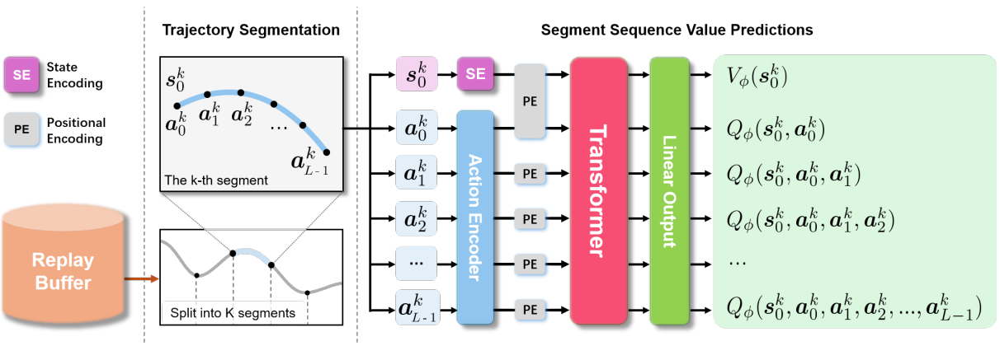
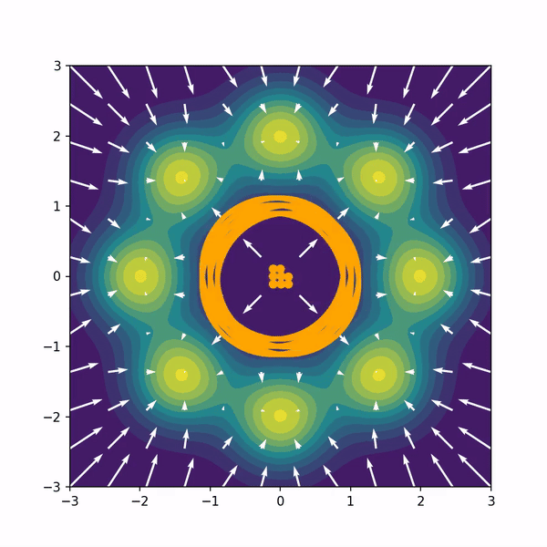

|
I am a PhD student in the Intuitive Robots Lab (IRL) at the Karlsruhe Institute of Technology (KIT), Germany.
My research focuses on developing efficient and scalable methods for robot learning under the supervision of Rudolf Lioutikov.
Email / Google Scholar / Github / LinkedIn |

|
|
My primary research goal is to develop machine learning algorithms that enable the usage of robots in everyday life. Potential paths to reach this goal include imitation learning and reinforcement learning. A key challenge for imitation learning is the difficulty of collecting high-quality demonstrations, which are costly and time-consuming. Reinforcement learning, on the other hand, is usually inefficient for real robots due to its reliance on extensive trial and error. To overcome these challenges, I focus on developing scalable robot learning methods that combine imitation learning and reinforcement learning. Representative papers are highlighted. |
|

Ge Li, Dong Tian, Hongyi Zhou, Xinkai Jiang, Rudolf Lioutikov, Gerhard Neumann Preprint, Under Review arXiv This work introduces Transformer-based Off-Policy Episodic Reinforcement Learning (TOP-ERL), a novel algorithm that enables off-policy updates in the ERL framework. ERL methods are often constrained to on-policy frameworks due to the difficulty of evaluating state-action values for entire action sequences, limiting their sample efficiency and preventing the use of more efficient off-policy architectures. TOP-ERL addresses this shortcoming by segmenting long action sequences and estimating the state-action values for each segment using a transformer-based critic architecture alongside an n-step return estimation. |
|

Hongyi Zhou, Denis Blessing, Ge Li, Onur Celik, Xiaogang Jia, Gerhard Neumann Rudolf Lioutikov NeurIPS 2024, Poster Project Page / Code / arXiv We introduce Variational Diffusion Distillation (VDD), a novel method that distills denoising diffusion policies into Mixtures of Experts (MoE) through variational inference. VDD is the first method that distills pre-trained diffusion models into MoE models, and hence, combines the expressiveness of Diffusion Models with the benefits of Mixture Models. Specifically, VDD leverages a decompositional upper bound of the variational objective that allows the training of each expert separately, resulting in a robust optimization scheme for MoEs. |

Puze Liu, Jonas Günster, Niklas Funk, Simon Gröger, Dong Chen, Haitham Bou-Ammar, Julius Jankowski, Ante Marić, Sylvain Calinon, Andrej Orsula, Miguel Olivares-Mendez, Hongyi Zhou, Rudolf Lioutikov, Gerhard Neumann, Amarildo Likmeta Amirhossein Zhalehmehrabi, Thomas Bonenfant, Marcello Restelli, Davide Tateo, Ziyuan Liu, Jan Peters NeurIPS 2024 Dataset and Benchmarks Track, Poster arXiv When deploying learning-based approaches on real robots, extra effort is required to address the challenges posed by various real-world factors. To investigate the key factors influencing real-world deployment and to encourage original solutions from different researchers, we organized the Robot Air Hockey Challenge at the NeurIPS 2023 conference. We selected the air hockey task as a benchmark, encompassing low-level robotics problems and high-level tactics. Different from other machine learning-centric benchmarks, participants need to tackle practical challenges in robotics, such as the sim-to-real gap, low-level control issues, safety problems, real-time requirements, and the limited availability of real-world data. |

Xiaogang Jia, Qian Wang, Atalay Donat, Bowen Xing, Ge Li, Hongyi Zhou, Onur Celik, Denis Blessing, Rudolf Lioutikov, Gerhard Neumann Conference of Robot Learning (CoRL) 2024, Poster Project Page / Code / arXiv We introduce Mamba Imitation Learning (MaIL), a novel imitation learning (IL) architecture that offers a computationally efficient alternative to state-of-the-art (SoTA) Transformer policies. MaIL leverages Mamba as a backbone and introduces a formalism that allows using Mamba in the encoder-decoder structure. This formalism makes it a versatile architecture that can be used as a standalone policy or as part of a more advanced architecture, such as a diffuser in the diffusion process. Extensive evaluations on the LIBERO IL benchmark and three real robot experiments show that MaIL: i) outperforms Transformers in all LIBERO tasks, ii) achieves good performance even with small datasets, iii) is able to effectively process multi-modal sensory inputs, iv) is more robust to input noise compared to Transformers. |

Ge Li, Hongyi Zhou, Dominik Roth, Serge Thilges, Fabian Otto, Rudolf Lioutikov, Gerhard Neumann ICLR 2024, Poster arXiv In this work, we introduce a novel ERL algorithm, Temporally-Correlated Episodic RL (TCE), which effectively utilizes step information in episodic policy updates, opening the 'black box' in existing ERL methods while retaining the smooth and consistent exploration in parameter space. TCE synergistically combines the advantages of step-based and episodic RL, achieving comparable performance to recent ERL methods while maintaining data efficiency akin to state-of-the-art (SoTA) step-based RL. |

Fabian Otto*, Hongyi Zhou*, Onur Celik, Ge Li, Rudolf Lioutikov, Gerhard Neumann
* Equal contribution
Under Review, 2023
project page / arXiv
We introduce a novel deep reinforcement learning (RL) approach called Movement Primitive-based Planning Policy (MP3). By integrating movement primitives (MPs) into the deep RL framework, MP3 enables the generation of smooth trajectories throughout the whole learning process while effectively learning from sparse and non-Markovian rewards. Additionally, MP3 maintains the capability to adapt to changes in the environment during execution.

Fabian Otto, Onur Celik, Hongyi Zhou, Hanna Ziesche, Vien Anh Ngo, Gerhard Neumann
Conference of Robot Learning (CoRL) 2022, Poster
arXiv
In this paper, we present a new algorithm for deep ERL. It is based on differentiable trust region layers, a successful on-policy deep RL algorithm. These layers allow us to specify trust regions for the policy update that are solved exactly for each state using convex optimization, which enables poli- cies learning with the high precision required for the ERL.

Xi Huang, Gergely Sóti, Hongyi Zhou, Christoph Ledermann, Björn Hein, Torsten Kröger
2022 IEEE/RSJ International Conference on Intelligent Robots and Systems (IROS), 2022
Paper Link / arXiv
This paper introduces Heuristics Informed Robot Online Path Planning (HIRO). Dividing robot environments into static and dynamic elements, we use the static part for initializing a deterministic roadmap, which provides a lower bound of the final path cost as informed heuristics for fast path-finding. These heuristics guide a search tree to explore the roadmap during runtime. The search tree examines the edges using a fuzzy collision checking concerning the dynamic environment. Finally, the heuristics tree exploits knowledge fed back from the fuzzy collision checking module and updates the lower bound for the path cost.
|
The website is based on the code from source code! |